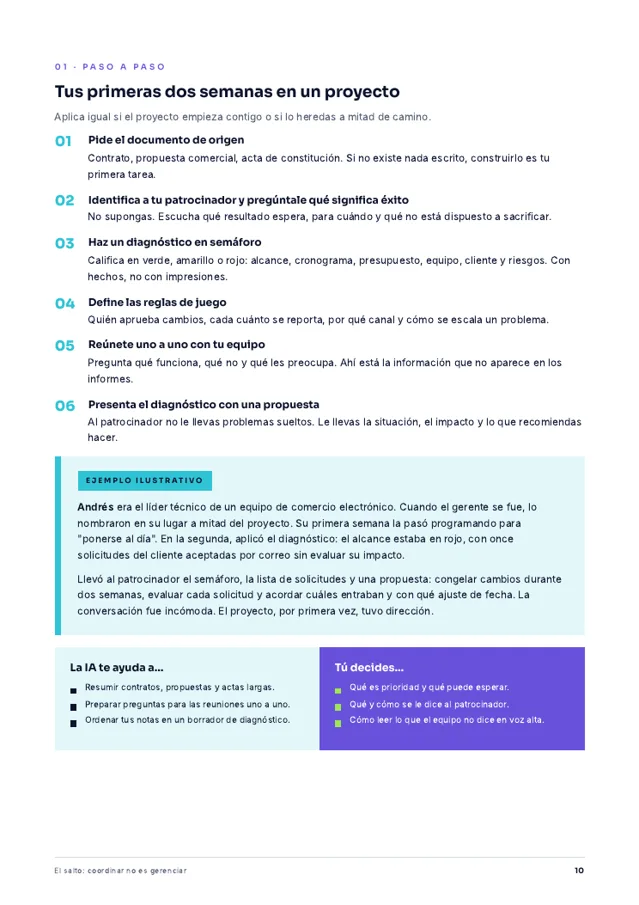
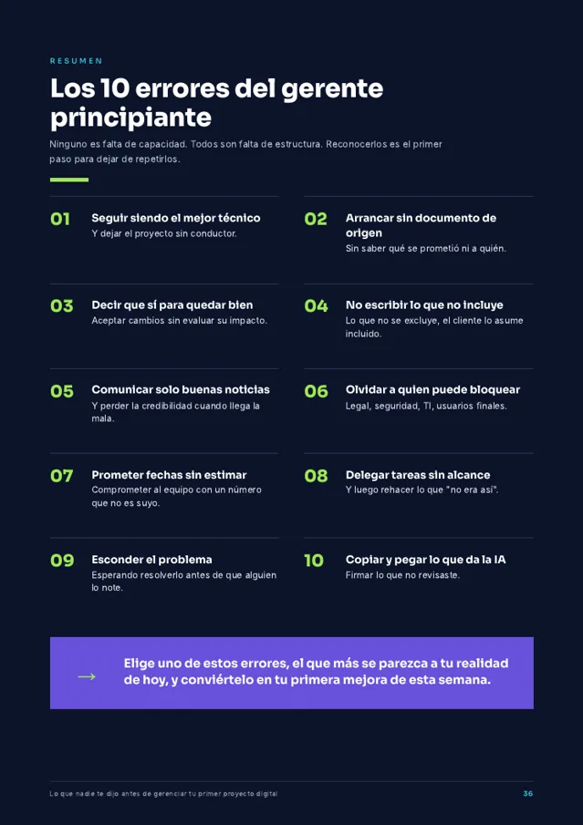
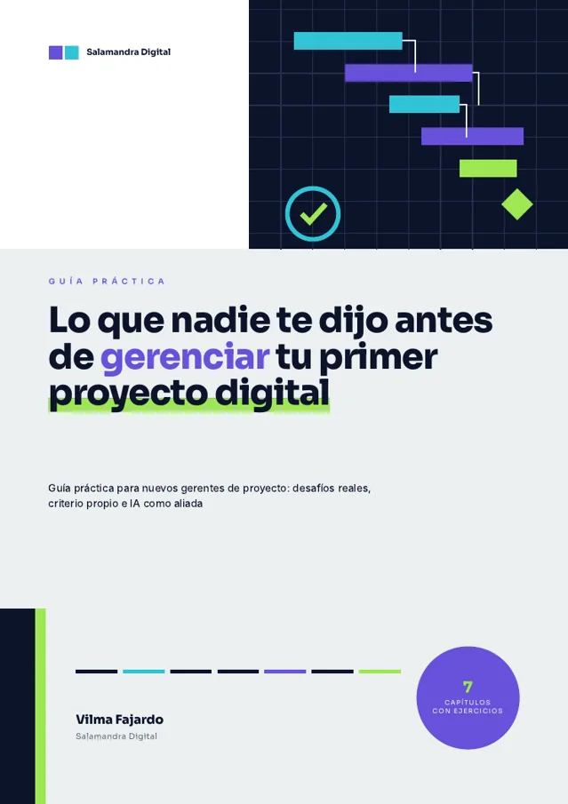
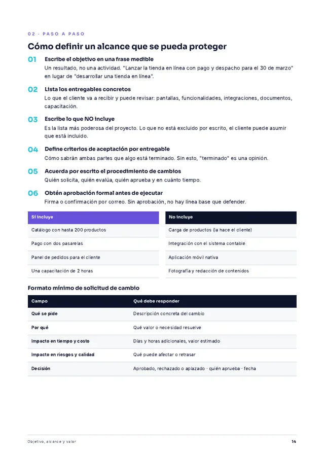
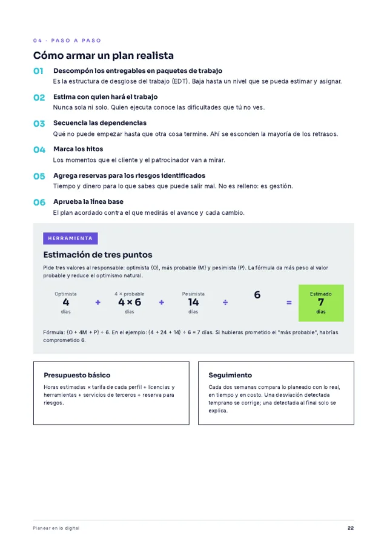
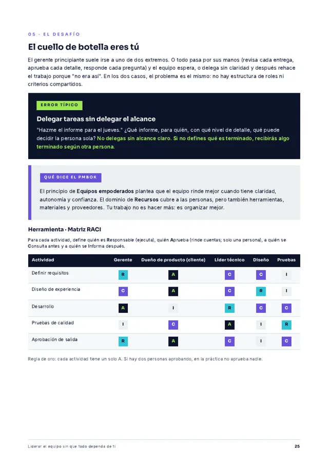
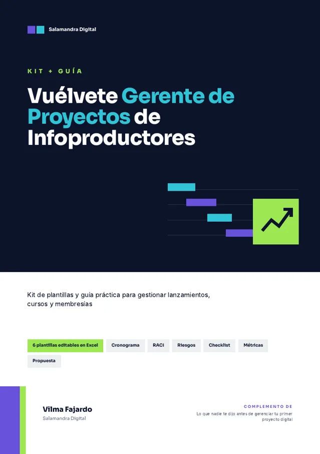
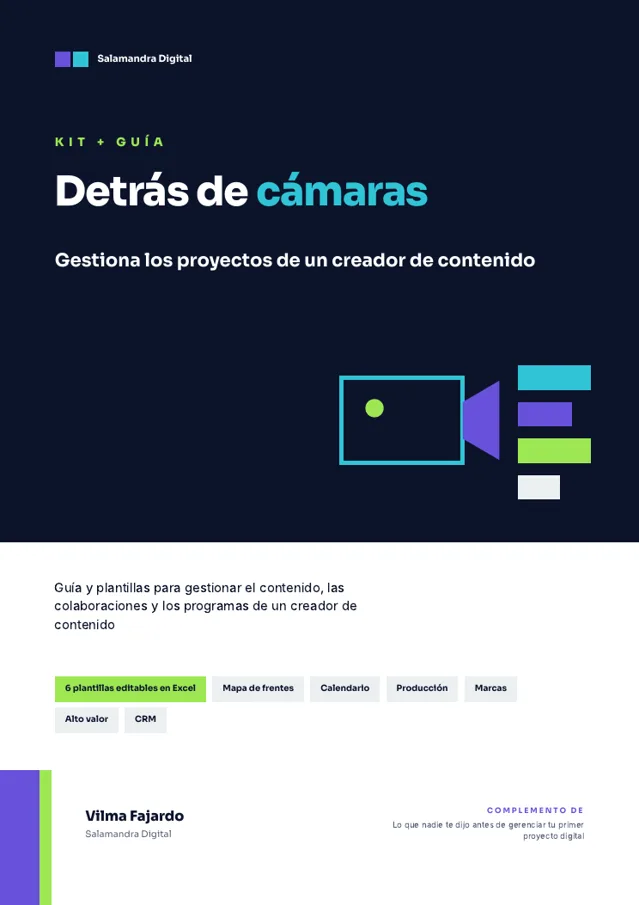

Lo que nadie te dijo antes de gerenciar tu primer proyecto digital: 7 capítulos con ejemplos, ejercicios y un plan para tus primeros 30 días. Con el PMBOK como base y la IA como aliada, sin entregarle tu criterio.
Quiero el ebook por USD 17 →


Una y otra vez, las empresas ascendían a su mejor técnico a gerente, sin guía y sin preparación. El resultado casi siempre era el mismo: perdían un buen técnico y ganaban un mal administrador. No por falta de talento, sino porque nadie le enseñó el nuevo oficio.
No te falta capacidad. Te falta estructura.
Una guía práctica que convierte el estándar de la gestión de proyectos en decisiones concretas para tu primer proyecto digital. Sin jerga, sin teoría de relleno.
No necesitas certificación. Necesitas un proyecto real y la decisión de trabajar con método.
Los principios y dominios del estándar vigente, traducidos a lo que haces el lunes en la mañana.
Dónde te ahorra horas la IA, dónde no, y cómo validar lo que te entrega antes de firmarlo con tu nombre.
Ejercicios para tu proyecto real, 10 plantillas en Excel listas para editar y un plan de acción de 30 días.
Sitios web, aplicaciones, tiendas en línea, plataformas, integraciones y lanzamientos tienen cinco rasgos que cambian las reglas. La guía está construida alrededor de ellos.
El cliente descubre lo que quiere cuando ve las primeras pantallas.
El trabajo digital no se ve: "mover un botón" parece un minuto.
Pasarelas de pago, plataformas e integraciones que pueden fallar sin aviso.
Predictivo, ágil o híbrido: elegir mal el enfoque cuesta caro.
Desarrollo, diseño, pruebas y proveedores externos, cada uno en su lugar.
Acelera lo operativo. Lo que firmas sigue siendo tu responsabilidad.
Los capítulos siguen la secuencia natural de un proyecto: asumir el rol, definir, alinear personas, planear, liderar, controlar y apoyarte en la IA.
Qué cambia cuando pasas de coordinar a gerenciar, y cómo evitar que el proyecto crezca sin control.

Cómo gestionar expectativas, dar malas noticias sin perder credibilidad y estimar sin optimismo.

Cómo delegar con alcance claro, anticipar riesgos y usar la IA como copiloto sin entregarle el mando.

Con acta de constitución, alcance escrito, exclusiones, cronograma planeado hacia atrás desde la apertura, registro de riesgos y control de cambios. Las mismas herramientas que vas a recibir.
Incluso las plantillas en Excel que acompañan este ebook nacieron como una solicitud de cambio: se evaluó su impacto, se aprobó y se registró. Así se trabaja con estructura.
Al pagar puedes agregar uno o los dos kits complementarios, cada uno con una guía corta y seis plantillas editables en Excel.

Gestiona lanzamientos de cursos y membresías: cronograma con fechas automáticas, RACI, riesgos, checklist de apertura, métricas y propuesta de servicio.

Gestiona los proyectos de un creador de contenido: mapa de frentes, calendario multiplataforma, producción, marcas, programa de alto valor y CRM.
Es un PDF de 39 páginas, acompañado de un archivo de Excel con 10 plantillas editables: diagnóstico, alcance, solicitudes de cambio, interesados, comunicación, estimación, RACI, delegación, riesgos y plan de 30 días. Funciona en Excel y en Google Sheets.
No. La guía está escrita para quien empieza. Usa el PMBOK como base, pero lo explica sin jerga y lo aterriza en situaciones reales.
Está pensado para proyectos digitales: sitios web, aplicaciones, tiendas en línea, plataformas, integraciones y lanzamientos en línea. Si tu proyecto es de otro tipo, los principios te sirven, pero los ejemplos y las herramientas están hechos para lo digital.
La octava edición, publicada por el Project Management Institute en noviembre de 2025. La guía es independiente y no está afiliada a PMI.
No, y la guía te explica por qué. Te muestra dónde la IA te ahorra horas y cómo validar lo que produce antes de usarlo.
Al confirmarse el pago, Hotmart te envía un correo con el acceso para descargar el PDF y, si los agregaste, los kits.